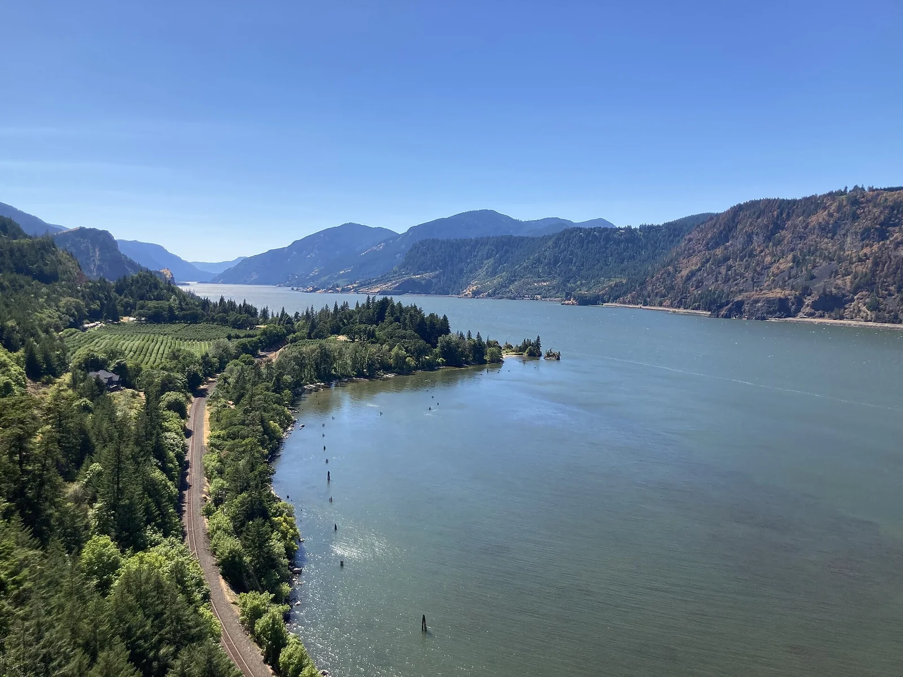

Hood River — Columbia Gorge
Oregon, USA · windsurf, kitesurf, paddle

Le 'Gorge' : couloir venté le long du fleuve Columbia, capitale américaine du windsurf et du kite en eau plane à clapoteuse.
- Lieu
- Oregon, USA
- Niveau
- Intermédiaire
- Activités
- windsurf, kitesurf, paddle
- Type d'eau
- inland
- Coordonnées
- 45.71, -121.51 (position approximative du secteur)
Dangers à connaître
- Vent fort canalisé par la gorge.
- Trafic fluvial (barges).
Le conseil d'Ocean Buddy
Eau froide : combinaison conseillée même l'été.
Ouvrir dans Ocean Buddy Télécharger sur l'App Store
Source : Description historique Ocean Buddy · vérification externe en attente.